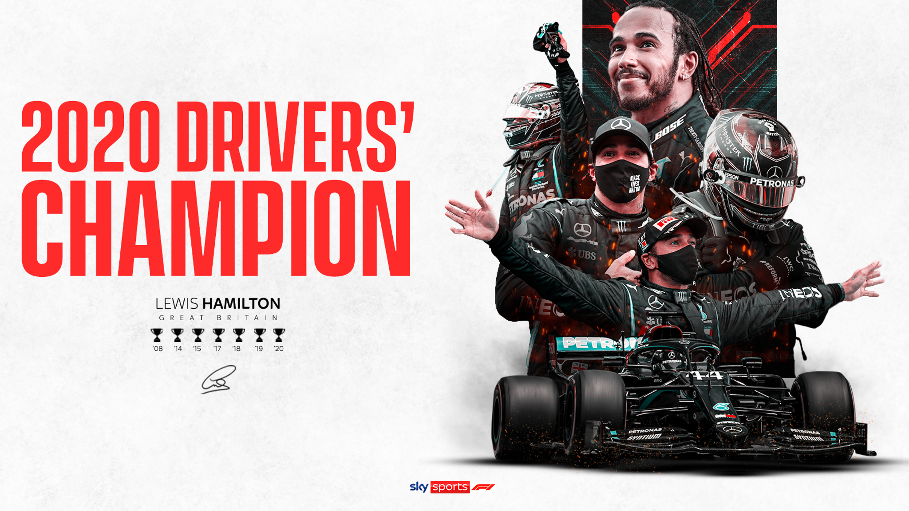
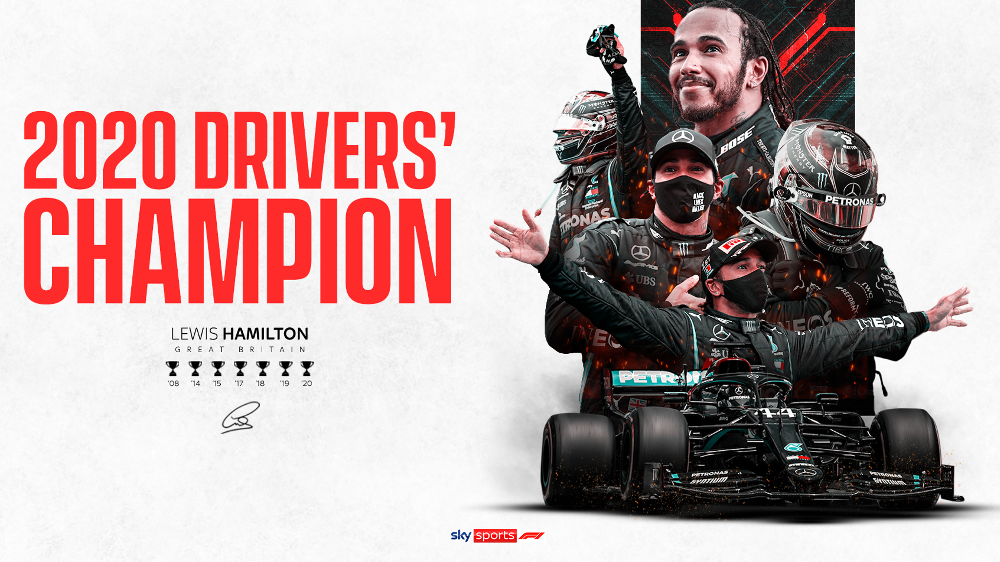
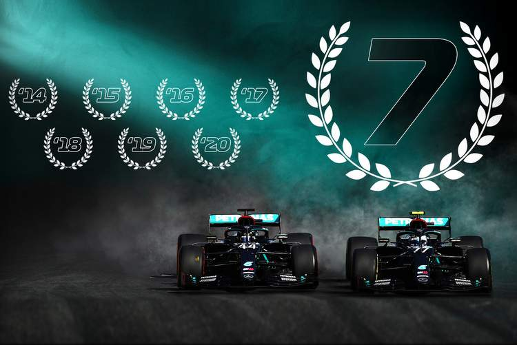
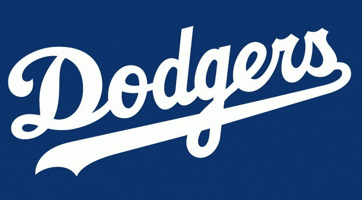
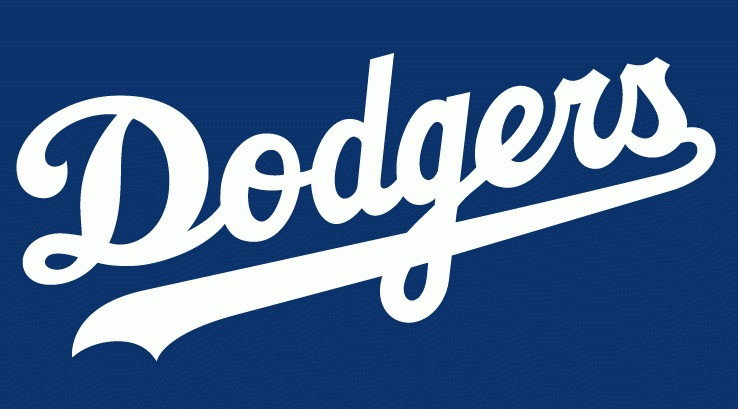

Andy's Sports Predictions
Hello there! Welcome to my website! I have channeled my weeks of experience making websites in class into this one final project. Isn’t that so excited! I know I’m excited. You’re probably wondering, though, what is this website even about? I get that you’re a student and all that’s learning how to do some introductory web development, but you’re website will actually have somewhat interesting content on it, right? Well of course! Here you will find the best sports predictions around! I will focus on the two sports I know best: Formula 1 racing, and Major League Baseball. They’re pretty different and generally don’t have fanbases that overlap, so I’ve included some brief descriptions on this page to help you get started on making sense of the predictions you’ll see as you poke around.
Sports Overview
2021 Formula 1 World Drivers Championship
 

We’ll start off our Formula 1 mini-lesson with the “Driver’s Championship.” Interestingly, and unlike American sports, there are two championships in F1. One for the most successful team, and one for the most successful driver. Here, we’ll talk about the Driver’s Championship. A typical Formula 1 season has about 20 or so races. There are 10 teams that compete in those races, and each team fields two cars and two drivers, making 20 drivers in total. The top 10 Drivers of a given race earn points, from just 1 point for the 10th place driver, all the way to 25 for the race winner. The Driver’s Championship is straightforward: whichever driver finishes the season with the most points, wins. In the 2010s, there were three different World Champions, two of whom, Lewis Hamilton and Sebastian Vettel, are still in F1 today!
2021 Formula 1 World Constructors Championship

Now on to that team championship I told you about. It’s called the “Constructor’s Championship.” In American racing, the cars are typically what are called “stock”, meaning that they are modified from a standard skeleton that every team starts with. In this kind of racing, the rules are very tight, making each car only very slightly different from any other car. They all go just about the same speed, so winning is mostly up to the skill of the driver. In F1, this is not the case. Each team constructs a car from scratch. The cars end up being very, very different. This also creates a wider gap in performance from the top cars to the bottom cars, and puts most of the focus in F1 not on the drivers, but on the engineers that develop the car, since that will be where most of the speed and results come from. This is why the Constructor’s Championship is so important. it’s really what F1 is all about.
2021 Major League Baseball
 

Now we are back to something that anyone reading this site is probably more familiar with: good ole baseball. For those that might not be aware, baseball is a bat-and-ball sport where 30 teams, organized into 6 divisions and 2 leagues, fight for a spot in the playoffs, where they battle in hopes of making, then winning, the World Series. There are generally two groups of players on a given team: the batters and the pitchers. The batters are responsible for making sure your team scores a lot, and the pitchers are responsible for making sure the other team doesn’t score a lot. Sounds pretty simple, right? It is! In this page of the website, I’ll be predicting who I think will win each of the 6 divisions, followed by who I think will win each of the 2 leagues, followed by who I think will win the World Series. Also pretty simple, you’re in luck!